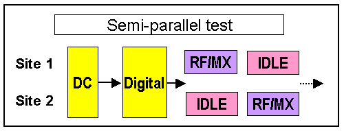

Semi-parallel execution
The following figure shows a combination of an RF/MX-Signal Test and a digital test in a semi-parallel setup.

An example of a typical test method for this type of setup is shown below.
//
// Connect DGT to site 1
//
ON_FIRST_INVOCATION_BEGIN();
FOR_EACH_SITE_BEGIN();
INT site = CURRENT_SITE_NUMBER();
if ( site == 1) // connect digitzer to site 1
{
Routing.pin("Aout").connect(TM::SINGLE)
}
FOR_EACH_SITE_END();
FLUSH();
//
// Do some analog test for site 1
//
...
...
Routing.pin("Aout").disconnect(TM::SINGLE); // disconnect
FOR_EACH_SITE_BEGIN();
INT site = CURRENT_SITE_NUMBER();
if ( site == 2)
{
DGT("Aout").connect(TM::SINGLE)
}
FOR_EACH_SITE_END();
FLUSH();
//
// Do some analog test for site 2
//
...
...
ON_FIRST_INVOCATION_END();
Using SmartCalc with result areas
A result area only holds the results from one functional, capture, or DC test. The most recent test overwrites all previous results.
Before you re-use a result area in a testflow use SMC_SYNCHRONIZE() to upload all results. For semi-parallel execution, ensure that you allocate individual result areas for each semi-parallel group execution. If you would use only a single result area for all groups SmarTest will only hold the results from the last group.
Functional changes
- Introduced before SmarTest 6.3.2